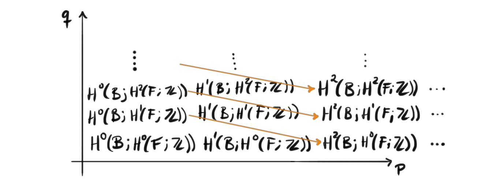
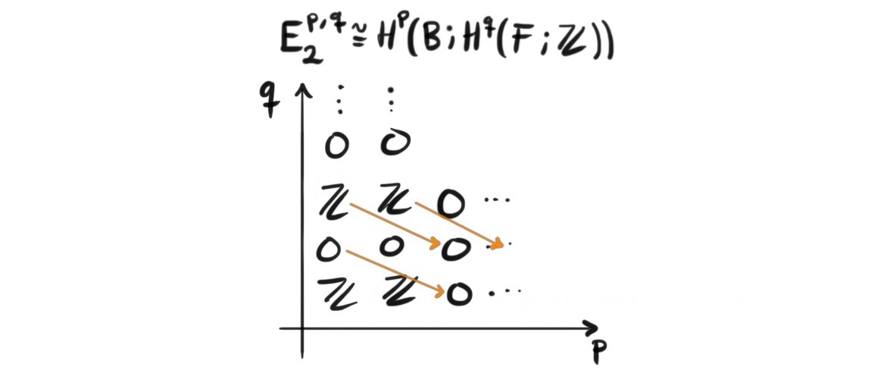
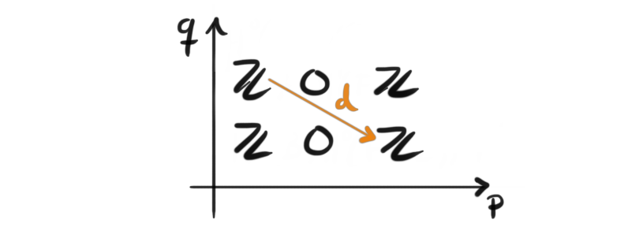
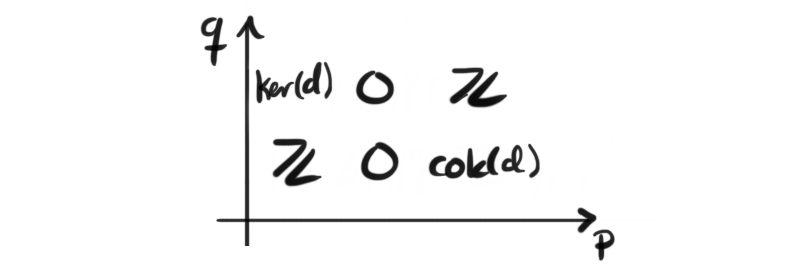

This is part 4 of a series leading up to and exploring model categories. For the other parts see 1, 2, 3, 5 6, 7, 8 and 9.
My personal favorite part about fibrations is that they come equipped with a natural way to compute the cohomology of the total space from the cohomology of the base and the cohomology of the fibers. This process is encoded in a structure called a spectral sequence, and is a complicated object in its full generality. It consists of layers upon layers of intertwined cohomology groups, all sewn together by homomorphisms. But when I first learned their computing power, and learned how to use them, I fell in love with the structure. If you visit my homepage you will find several small write ups using spectral sequences to prove theorems and do computations of cohomology rings etc. Therefore, I want to create a nice introduction to how to use them, given a fibration. Technicalities of the structure of the spectral sequences will be omitted, but the definitions will of course be given.
Spectral sequences
A spectral sequence can be thought of as a book, with possibly infinite pages. Every page consists of multiple complexes of cohomology groups, each being the cohomology of one of the complexes on the previous page. The maps on a page will be “longer” than the maps on the previous page, and all of them will be almost diagonal. We will make all this more precise in a little bit, but it can be helpful to have this information in the back of the head will reading and exploring the definition. With that said we first remind ourselves of some basic definitions from homological algebra to be able to formulate and be precise with the spectral sequence afterwards.
Definition (chain complex): A sequence of abelian groups (or more generally modules, or even more generally objects in some abelian category)
$$\cdots \rightarrow A_{n-1} \overset{d_{n-1}}\rightarrow A_n \overset{d_n}\rightarrow A_{n+1} \rightarrow \cdots $$
is called a cochain complex if the composition of two arrows is zero, i.e. if $d^2 = 0$. This is equivalent to saying that $\text{Im}(d_{n-1})\subset \text{Ker}(d_n)$.
Definition (cohomology): Let C be a cochain complex. We define the n‘th cohomology group of $C$ to be $H^n(C) = \text{Ker}(d_n)/\text{Im}(d_{n-1})$. This is often verbally stated as “cocycles modulo coboundaries”.
The most important cases for us is the use of cohomology of topological spaces. From a topological space $X$ we can define a cochain complex called the singular cochain complex on $X$. When we take the cohomology groups of this singular cochain complex, we get a lot of information about the topological structure of $X$. When we discuss cohomology groups from here on out, we will always mean this type of cohomology.
Definition (Spectral sequence): A spectral sequence is a tri-graded object, or a list of bi-graded objects $E^{p,q}_ r$ together with morphisms $d^r: E^{p,q}_ r \rightarrow E^{p+r, q-r+1}_ r$ for all $r>0$ ,$p,q\in \mathbb{Z}$, and isomorphisms $E^{p,q}_{r+1}\cong H(E^{p,q}_{r})$. The spectral sequence is called a first quadrant spectral sequence if $E^{p,q}_r = 0$ when $p< 0$ or $q<0$ .
Remark: In the way we have developed the spectral sequence, it computes cohomology. I just want to mention that there is a completely analog version that computes homology. If we go through the same construction, just reversing all the arrows, and changing coefficients by tensoring instead of taking dual groups, we get a spectral sequence of homological type.
The first time I saw this definition, i didn’t understand anything. It was through a graduate course in algebraic topology, and roughly half the course focused on the use of spectral sequences. The problem with trying to introduce this abstract structure in this short of a text is that we don’t have enough time to explore it properly, and not even explain the definition properly with the care and precision it really deserves. That said, I feel the importance of the spectral sequence is not the understanding of the nitty gritty details, but how we can use it. The spectral sequence in all of its generality is for me not very nice, but there are special cases of them that pop up from different places, most important for us, from a fibration. This special case makes it relatively easy to depict what happens, and how topological spaces relate to each other through the fibrations. The proof that we in fact get a spectral sequence from a fibration is rather long and difficult, and I don’t want to go through it here (at least for now), so just trust me when i say that it works. If you don’t, I recommend Weibel’s book “An introduction to homological algebra” where the construction is explained further, or Hatcher’s book “Algebraic topology”.
To be more precise about how the spectral sequence from a fibration looks, we give a proper definition.
Definition (Serre spectral sequence): Given a fibration $F\rightarrow X\rightarrow B$ we get a first quadrant spectral sequence $E$ such that $E_r^{p,q}\Rightarrow H^{p+q}(X, \mathbb{Z})$ .
This spectral sequence starts at the second page which is given by $E_2^{p,q}\cong H^p(B;H^q(F;\mathbb{Z}))$.
Here the ‘'$\Rightarrow$’' means that it computes or “converges” to the cohomology of the total space. This roughly translates to taking the direct sum of all of the groups on the diagonal, i.e. $H^n(E) \cong \bigoplus_{p+q=n}E_{\infty}^{p,q}$. This is not always completely correct, and we have to be a bit careful when doing this, but in the case of first quadrant bounded spectral sequences I think it holds. In the examples I will try to be more graphical, and use pictures of the spectral sequences to make the math clearer. Whenever I say spectral sequence from now, I will mean (unless otherwise stated) the Serre spectral sequence. Before we look at some examples lets look at a general picture for how the second page of the spectral sequence of a fibration $F\rightarrow X\rightarrow B$ looks like.

Here we can quite clearly see the almost diagonal maps on the second page, and we also see the bi-graded grid of cohomology groups that is described in the definition. If I had drawn a bigger diagram, we would start to see to of the orange arrows after one another. The sequence of groups with these arrows called differentials form chain complexes as we mentioned in earlier, i.e. their composition will always be zero. I will not draw a general picture of the third page, but it would consist of the cohomology of the complexes formed by the orange differentials. The maps on the third page would go two down and three to the right, instead of one down and two to the right as in the second page we see depicted. Note that the maps being called differentials here are not because they are maps in the spectral sequence, but because they are differentials in the chain complexes, meaning they compose to zero and satisfy the generalized Leibniz rule. We will not need this, but it is important to know the naming conventions.
Computing some examples
To see that it actually works, it is maybe good to have a trivial example first, namely when the fibration $F \rightarrow E \rightarrow B$ comes from a trivial fiber bundle, also called the product, i.e. $E\cong B\times F$. Lets take a concrete example, say $S^2 \rightarrow E= S^1\times S^2 \rightarrow S^1$. The spectral sequence associated to this fibration should in theory compute that the cohomology $H^n(S^1\times S^2)$ is the same as the product of the cohomologies $H^n(S^1)\times H^n(S^2)$. Let’s see how it pans out. We know that the cohomology groups of $S^1$ looks like the integers in degree zero and in degree one, i.e. $H^0(S^1;\mathbb{Z}) \cong \mathbb{Z} \cong H^1(S^1;\mathbb{Z})$. We also know that the cohomology groups of $S^2$ looks like the integers in degree zero and in degree two, i.e. $H^0(S^2;\mathbb{Z}) \cong \mathbb{Z} \cong H^2(S^2;\mathbb{Z})$, hence we get

As we see, the differentials miss all of the available groups, and every one of them is therefore the zero homomorphism, since remember that the sequences of objects they form are in fact complexes. Hence nothing changes when we flip to the next page, and the next after that, and we have $E_2 = E_{\infty}$. Because of this the cohomology of the product is the sum along the diagonal and we get $H^0(S^1\times S^2) \cong \mathbb{Z}$, $H^1(S^1\times S^2) \cong \mathbb{Z}$ and $H^2(S^1\times S^2)\cong \mathbb{Z}$, just as we expected.
Let’s do another example. In part 3 of this fibration series we computed the third homotopy group of the sphere by using the long exact sequence of homotopy groups from the Hopf fibration. What happens in the spectral sequence associated to the Hopf fibration then? On the second page we get four cohomology groups as shown here:

We only have one non-zero differential, namely the morphism between $E_2^{0,1}$ and $E_2^{2,0}$. Hence, when we flip to the third page, we have

On the third page we see that all of the possible differentials are too long to hit any of the groups, hence we know that the third page is the last page, i.e. all pages after has to look exactly the same. We are lucky to already know how the cohomology of the spheres look, and since we know that the spectral sequence computes the cohomology of $S^3$ we know that the differential has to be an isomorphism, since it has to have both a trivial kernel and a trivial cokernel. To explain a bit better, if we were to sum along the diagonals to compute the cohomology of $S^3$, we would see $H^1(S^3)=Ker(d)$, but as mentioned we know that $H^1(S^3)=0$, thus we must have $Ker(d)= 0$. The exact same argument holds for $Cok(d)$, and since they are both zero, d has to be an isomorphism.
Future of the series
Next time in the fibration series we will use the machinery we developed in here, together with some theorems to compute one more of the non-trivial homotopy groups of the spheres. We will show that $\pi_4(S^3) \cong \mathbb{Z}/2$ which i think historically was the first computed homotopy group of a sphere that was non-trivial and also not just the integers, but a finite cyclic group. A tentative plan for this series is to introduce enough material so that I can start to learn about model categories properly. There is also loads more fun calculations to do and more theorems and concepts to study. Also, recently Eric Weinstein published a lecture describing his proposed theory of everything, i.e. a theory that unifies general relativity and quantum mechanics. In this theory he uses a generalized version of the universe as a manifold and constructs a certain fiber bundle over this manifold which he calls the Observerse. It would be cool to try to construct this bundle, and a related bundle which he calls the Chimeric bundle, to dip my toes into mathematical physics. The summer vacation is long, and corona makes sure that I have plenty of time at home to study. For reading to the end I last time left off with an incredible art piece by my favorite Russian mathematician and artist Anatoly Fomenko, picturing his vision on homotopy groups of spheres. I will leave off this time with yet another artwork by Fomenko, this time it naturally fits to leave off with his work “A spectral sequence“.